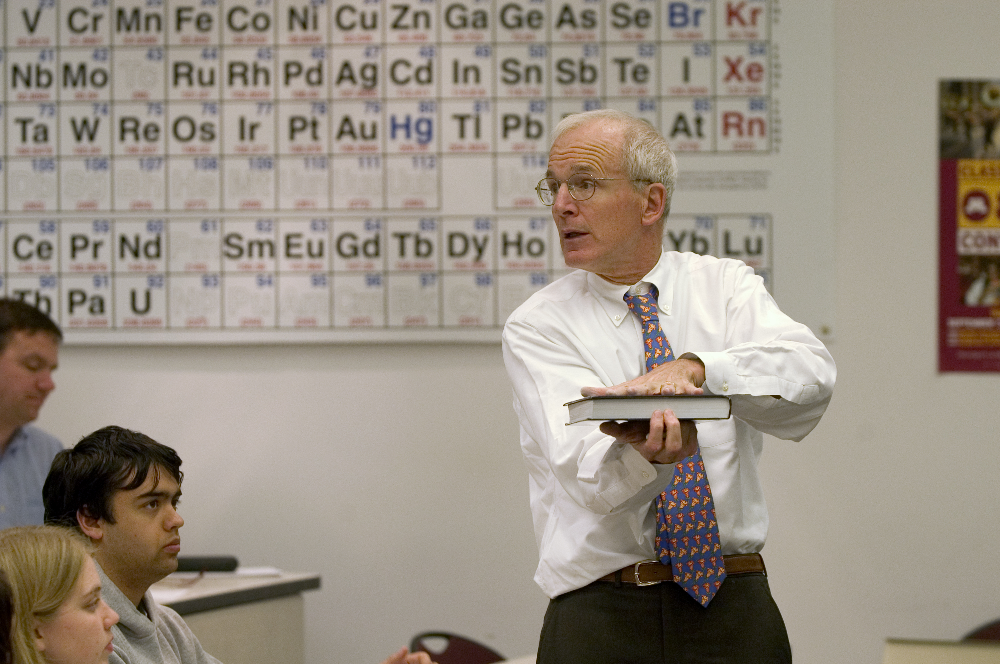

Abstract
The Cognition, Measurement and Evaluation (CME) project combines the latest thinking in cognitive science about scientific reasoning and its attainment with recent advances in modern instrument development techniques. The CME project produced a linked system of developmentally-appropriate, multiple-choice and constructed-response assessment instruments designed to measure scientific reasoning skills across age levels. These tools will be useful for researchers, classroom teachers and educators in settings for learners from 5th grade through college. The project focuses on scientific reasoning skills of control of variables and evaluating evidence. These skills will be defined in ways suitable for modern instrument development and will result in a draft instrument and model computer platform that would be ready for initial field testing. The ultimate goal is to create an assessment system that will provide information to:
- STEM researchers who want to understand how innovative technologies, instructional approaches, and/or teaching practices impact students’ scientific reasoning abilities, and
- Teachers who need to understand how students are responding to particular aspects of inquiry instruction. The institutions involved include the University of Minnesota and the University of Kansas and surrounding school districts.
Based on needs assessment, existing research and instruments and content expert advice, we mapped the constructs by developmental level across the three age groups. Each construct map included developmental levels and a qualitative description of scientific reasoning at each level. The item development process included development of scoring systems to map responses to certain levels of the scientific reasoning constructs. Initial drafts of the instruments were investigated through talk-a-louds, exit interviews, and focus group interviewing. An initial pilot test with a more substantial sample allowed for modeling of the data using IRT. We used item fit, differential item function, and coverage maps to assess item properties. We also used item fit and model comparisons to examine the structure of the constructs. During the model building phase, the Rasch family models, which are the most parsimonious models, are fitted to the pilot data. If it is discovered that Rasch family models do not fit the data, revisions to the construct, instrument, scoring model, and measurement model will be implemented.
One of the most pressing needs in the evaluation of science education programs is the need for appropriate measuring devices. Currently, the field uses a variety of assessment devices, making it almost impossible to determine national effects or to compare different approaches. Although assessment of scientific reasoning is not a new concept, recent ideas about its definition and its measurement may be transformative. The assessment devices developed by this project were validated to ensure cultural relevancy and absence of bias and therefore enhanced the infrastructure available for research and education. Over time the use of the developed instruments will allow in-depth understanding of the impact of different programmatic approaches to the development of scientific reasoning, a critical goal of STEM education.

Revised July 2014